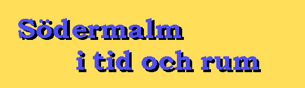
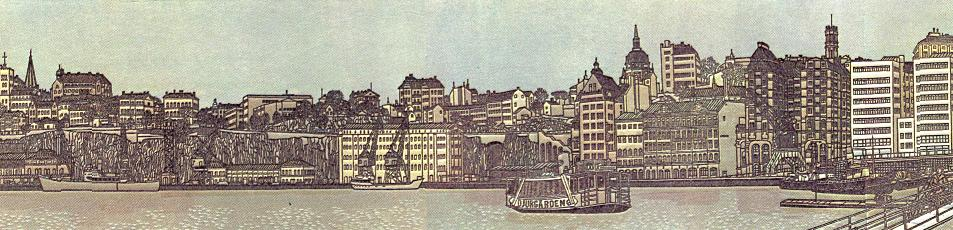

Södermalm i tid och rum. Stockholm. Södermalms historia

Glädjande nog har en sponsor gjort det möjligt att bibehålla sidan under hela 2024!
Den aviserade nedläggningen skjuts således på framtiden!

Del av Södra bergen av Svenolov Ehrén
Källförteckning
Register
SÖDERMALMS HISTORIA
En webplats om Södermalm, sammanställd av
Bengt-Göran Jönsson i Olofström.
bengtjn@gmail.com